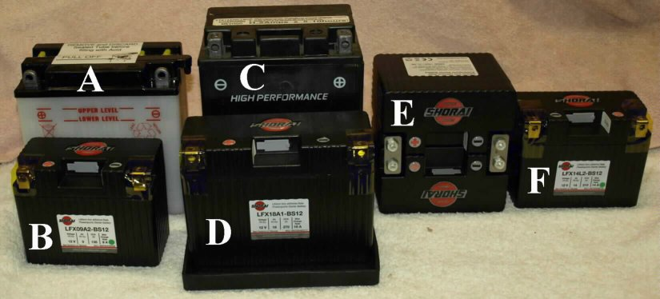
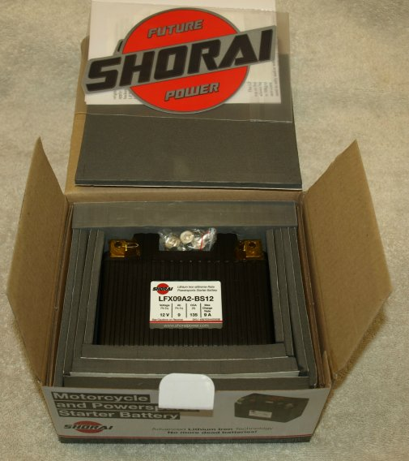
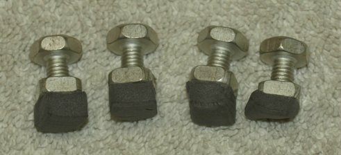
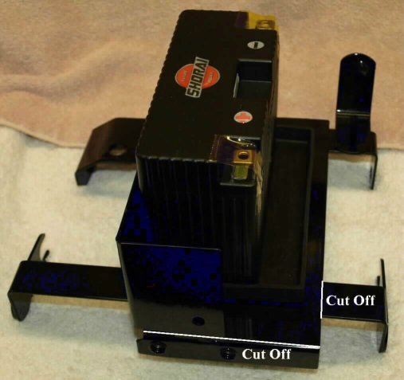
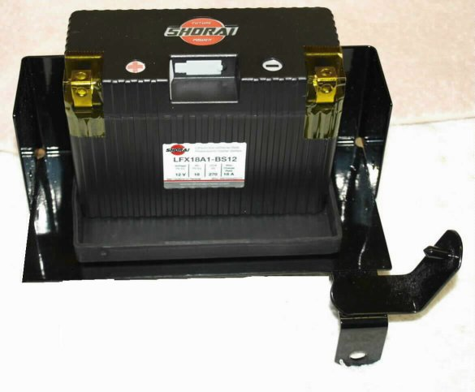
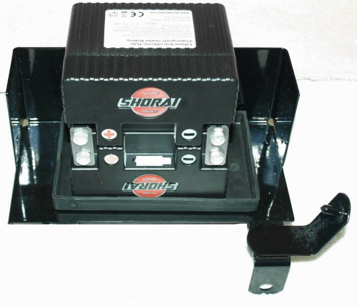
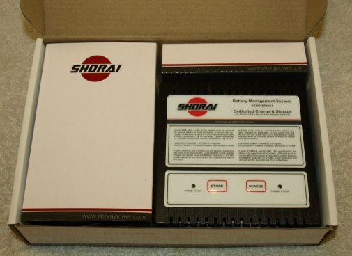
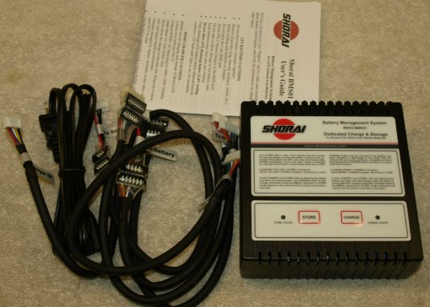

Old Britts is offering two of the excellent Shorai Lithium Iron batteries to replace the stock lead acid batteries normally used in Commandos. We stock a 18 amp hr battery to replace the battery used in the 1975 MK3 battery and the 9 amp hr battery used in the other Commandos. We recommend using a higher amp hour battery than the stock lead acid battery to be on the safe side. For this reason we find the 18ah battery will replace the 14ah MK3 battery, but feel that combining two 14ah batteries in parallel, giving 28ah, is the best for the MK3 or the Old Britts starter.
Some of the features of these batteries are:
- No more dead batteries. Holds charge for one year without maintenance.
- Twice the service life of lead-acid batteries on average.
- Drop-in replacement for your OEM battery.
- Military spec Carbon Composite Case.
- Faster cranking for better starts.
- Ultra light. One fifth the weight of lead-acid batteries on average.
- Super-fast recharge rate.
- SAFE - No explosive gasses during charge, no lead, no acid.
- Environmentally friendly,
- Japanese engineering and components.

In the above picture the batteries shown are:
- A. The lead acid 9 amp hour battery used in most pre-MK3 Commandos. Weight 6 lbs.
- B. The Shorai replacement 9 amp hour battery. Weight 1.5 lbs.
- C. The lead acid 14 amp hour battery used on the MK3 Commando. Weight 11.5 lbs.
- D. The Shorai recommended 18 amp hour replacement battery for the MK3 or the Old Britts starter. Weight 2.3 lbs.
- E. Two Shorai 14 amp hour batteries in a coupled parallel configuration. Weight 3 lbs. This configuration gives you a 28 amp hour battery and will work extremely well for the MK3 or the Old Britts starter.
- F. The Shorai 14 amp hour battery. Weight 1.5 lbs. This battery could be used for both the pre-MK3 and the MK3, but is not recommended for the MK3. On the MK3 this battery has problems starting the engine when it is on the compression stroke. Kicking the engine over TDC and this battery will start the bike.
The batteries come packaged in a box approximately the same size as the battery being replaced. Each battery comes with enough sticky-backed-foam to make this new battery fit the same space it is replacing.

Each battery comes with four wire mounting bolts and nuts (only two required). The nice feature the Shorai mounting hardware has is a piece of foam attached to the bottom of the nut, so starting to thread the bolt is very easy.

All the Shorai batteries will fit in the Pre-MK3 battery box and the MK3 battery box. The following three pictures show the 18 amp hour and the two 14 amp hours mounted in a pre-MK3 battery box. We are showing this battery box for customers that have purchased our starter conversion and want use their existing battery box. They will need to remove the front flange and the left side flange. Since the Shorai batteries are so light, the left side is not required to keep the battery box positioned.



As you can see in the above pictures, another advantage of the Lithium-Iron battery is it can be placed in any position that works for your application.
The Shorai battery management system is recommended to obtain maximum life out of your Shorai battery. This system has two settings:
- A store mode for long periods when the bike is idle or if your bike has a battery draw when the bike is not running.
- A charge mode for quick charges.
A battery charger like the Battery Tender can be used to charge your battery, but is not recommended for maintaining your battery charge when the bike is idle or if your bike has a battery draw when the bike is not running.


You need to confirm that your bike's charging system output is 13.6V or higher at 2000rpm. Also if the bike sits for long periods without being ridden please charge the battery if the parasitic draw drains the battery below 13.3V. Fully charged the battery should read 14.4V. The battery should never be allowed to discharge below 12.86V.
If the bikes charging system is not working properly the battery will be discharged while riding. Using the volt meter check that the charging system output voltage is 13.6V-14.4V at ~2000rpm. See the video for procedure instruction to test your charging system.
If the bike sits for long periods of time it can drain the battery from the bikes electrical parasitic draw. See the video to measure key off draw.
For a copy of the Shorai installation guide in PDF format see Installation Guide
For a copy of the Shorai specifications in PDF format see Specifications
This page was written and designed by F. H. Eaton & Associates if you have any questions or comments please contact us at info@fheaton.com